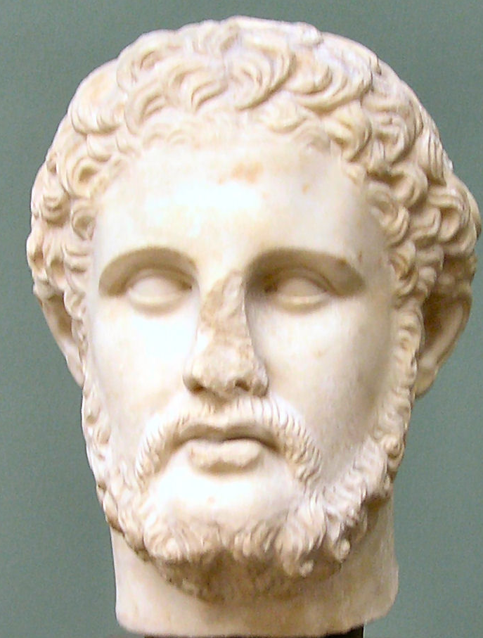

Part I: Universal Truths & Cycles
This first part will cover some basic things that can apply to statistics, programming, and possibly well beyond. None of the following really requires any specific background or experience to understand and begin implementing.
Face the facts and accept them
You have chosen to get, or have obtained, an advanced degree in a discipline that requires scientific output. Among many things, science involves putting a theory into a mathematical form that allows for some form of analytical chicanery to be applied, in an effort to weigh evidence for or against that theory. This can be very simple, and it doesn’t require causal formulation. For example, the following:
\[Y = f(X) + \epsilon\] may just mean something like life satistifaction (\(Y\)) is related to some set of other things like health, education, income, (i.e. all the stuff in \(X\)), but not exactly (\(\epsilon\)).
How you choose to investigate your theories will depend on your discipline, for better or worse. Practically speaking, it means you will have to do things like statistical analysis, collect data, do some programming, perhaps engage in a lot of writing, etc. If this isn’t for you, that’s perfectly fine, it means you’re normal, or at least among the vast majority of humanity. And if it isn’t your bag, it would be nice if you didn’t waste the time and resources of faculty, students, and others who do want to engagine in those activities, not to mention taxpayer money. Seriously, don’t be a jerk.
One more thing to plan on - everything, I mean everything, will take longer than you expect. That may even include your time-in-training.
Get Organized
The movies would like you to believe that science is just a series of eureka moments had by oddball geniuses who can’t seem to do anything right most of the time, but will intuit the perfect solution to any problem with just a moment’s reflection. As anyone who’s actually engaged in scientific research knows, this is a bunch of BS. A few simple steps can be taken, but which will avoid a lot of wasted time. There are a few things you can control in your research efforts, and this is one of them, so do it.
For starters, a very simple way to get organized is to create a project folder. Many IDEs (e.g. Spyder, RStudio) seem to do this now, which makes it easy. But for any project you have, make a project folder that will be the home for what you’re working on, e.g. a specific article or dissertation. This will serve as the working directory for that project1.
In addition, it should have some organization to it, e.g. subfolders for data, code, documents etc. There are even R packages that do this for you, but I advise you not to use someone else’s organization, as it likely will not work for you2. Note that your first attempt will also probably not work, but that’s okay, you’ll eventually find one that does the trick for most of your projects.
As an example, I have a batch script that will create something similar to the following folder structure:
Project/
Data_Files/
csvtxt/
Other/
RData/
Code/
Analysis/
Data_Preparation/
Descriptives/
Functions/
Related_Docs/
Misc_Notes_Etc/Very simple and straightforward. Also, note the underscores rather than spaces. We’ll talk about naming conventions later, but the gist is that you never want to name any file or folder with a space. People tell me it’s 2017 as I write this, but somehow spaces will still screw things up sometimes, or simply must be converted to something else at some point. Sigh.
On the programming side, the other nice thing about projects is that whenever you open or switch to a project, all your scripts will be there just as you left them. This allows you to pick things up right where you left off. Little efficiencies gained just by being even slightly more organized can save weeks over the course of say, a dissertation. Other things we will cover, e.g. doing things in a reproducible fashion, moving from simpler things to more complex, compartmentalization, version control, etc. are all little steps in organization that go a long way towards efficiency.
Open and free is the way to be
The movers and shakers in the academic world generally are not using things like SPSS, MS Excel and MS Word to do their work. They are also publishing in open outlets that allow for rapid dissemination and easy access to their work. Even if their primary tools are proprietary, they’re using something open and/or free under the hood. In fact, many of the most common tools of the trade are open source and/or freely available, e.g. C++, Python, R, \(\LaTeX\), Markdown, etc., and some are even boycotting traditional outlets altogether.
At least one reason for this is because open source means the code is available to be inspected, the licenses, for the code, if they apply, are far less restrictive3, and often anyone could potentially contribute to the development process. This in turn produces more rapid development and extension. Furthermore, not everywhere in the world where people might want to do science is well off enough to throw thousands of dollars at software. This is why R, Python and similar rapidly gained and took over ground after decades of domination by SAS, SPSS etc.4
On the proprietary side, take for example, Mplus, a widely used software for structural equation modeling. They just released version 8, five years after version 7 and a year and a half since the last point release (7.4). One of the things they mentioned were ‘corrections to minor problems that have been found’. They don’t mention what the bugs were, but evidently they were allowed to exist for a year or more (we don’t know if they existed prior to that as well).
Other statistical software, like SPSS, have a ‘full release’ every year, but one would be hard pressed to know what’s changed over the past 10. This sort of approach to software development is not acceptable in 2017, especially when comparable or even better tools are available to do the same task5.
Before I go on a rant, statistically, the best tools are found with R and Python. For writing, it’s far easier to use Rmarkdown for scientific publishing (even if you use Python), and if you really must have MS Word it will generate a .docx document for you. Otherwise, \(\LaTeX\) is still quite common and will produce a much better document than MS Word, especially if using mathematical formulas, tabgles, graphics etc.
I’m not saying you have to go as far as Richard Stallman (the guy pictured). But you have already long used and benefitted from open source software, so all I’m saying is continue doing so in your own research.
Compartmentalization

Now for a lesson from computer science, though more generally, it can be taken simply as divide and conquer. Break your activities into smaller, more manageable chunks. This makes it easy to pick up where you left off and get things accomplished even if you don’t have a lot of time. It has the added benefit that when things go wrong, it’s much easier to isolate the problem, and probably keep working on the other aspects of projec that are working.
Analysis
For analysis, break activities into something like the following:
- Initial import and inspection: This is just making sure you’re reading the data in correctly, and that a quick glance looks like it should
- Data processing: This is all the stuff you should be doing before you ever look at even a mean or standard deviation. Calculating composites, data debugging, merging, etc. would be included.
- Descriptive analysis: This includes just getting a feel for the data via simple summaries.
- Analysis: this will include trimming the data just to those variables necessary for the models, as well as running the models themselves.
- Visualization: This can be quite an undertaking itself, even to just get one visualization just right.
Programming
Your code can generally follow the plan for analysis, but it can easily be even further compartmentalized. For example, scripts can be specific to one goal, however trivial. In the analysis stage, you might be investigating several outcomes of interest. I that case, have a script specific to each one.
One might think that having a lot of scripts would be a problem, but generally, and if you’re just starting out, the converse will be far more of an issue. You can always create a master file that will call the scripts in a desired order. I have a rule of thumb that if I get to 100 lines, I better have some justification for not breaking some of it out into a more manageable chunk6.
This will also apply to functions for those that get further into programming.
Other
This applies to other endeavors. For example, when writing your paper, give each section it’s own document.
Reproducibility
Assume that at some point you’ll have to leave your analysis, code, document etc. behind. Maybe it’s just time off, maybe it’s a health issue, who knows? But think about when you come back. Will you know what you’ve done?
Analysis
Programming
A starting point in your programming is to comment everything. The comments should not be about what you’re doing. This is because if you know the language at all you’ll know what it’s doing, or if you forget, it will be easy to look up what the function or command is doing.
Other
Get a book
If you decide on a particular analytical route for your thesis or dissertation, get a book on it. Buy it, check it out whatever you need to, but have a handy reference for the thing you’re about to spend an inordinate time on, possibly with not having ever dealt with it before. It just makes sense. Even if it’s a little more technical, remember that you’re about to spend a lot of time in this area, and that’s the sort of thing you’ll need.
Complexify later
A very old approach that has withstood the test of time in many domains, start with the simple, and build in complexity as you go.
Much of your brain is devoted to visual processing
First, assume others’ brains are not so different from yours, then take advantage of it.
Embracing uncertainty but avoiding relativism
Flexibility
- Empty your mind, be formless. Shapeless, like water. If you put water into a cup, it becomes the cup. You put water into a bottle and it becomes the bottle. You put it in a teapot, it becomes the teapot. Now, water can flow… or it can crash. Be water, my friend.
The author of the one-inch-punch algorithm should not be taken lightly for obvious reasons.
Back up
Everything. You should never lose more than a day’s work under the worst of circumstances, and if you’re doing things even with the bare modicum of responsibility, you probably won’t lose more than a few minutes.
Your work isn’t that important
Go out and do something else. See some live music, get some exercise, go to a museum, get drunk, whatever you need to do to not think about this esoteric part of intellectual endeavor that in the end 99.9% of the world could care less about. The world will keep spinning I assure you.
Your first line of a programming script should never have to be to set the working directory.↩
Most of the folks I’ve come across that suggest ways to organize your folders typically call for a structure that would be notable overkill for applied researchers. A lot of people could probably get away with just a couple folders.↩
Typically the restrictions are things like, cite the authors, and don’t try to sell it.↩
It’s also the reason SAS and SPSS have integration with R and Python, and finally started offering free student versions. Too little, way too late.↩
I honestly can’t understand why almost all of these proprietary statistical packages still exist. Some I know are still accepting payments even though development ended years ago. Others served a need at one time that’s long been met by open source tools. Some practially have zero presence outside of a particular discipline or country.↩
This is not a rule that would apply e.g. in software development, but we’re not talking about that… yet.↩